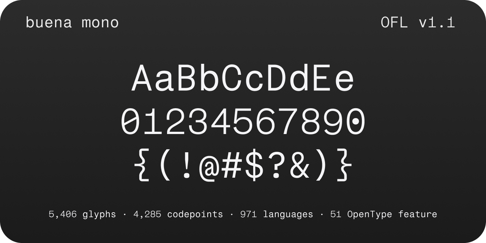

Buena Mono is a writer-first monospace typeface designed for markdown editors, code editors, and terminals. It combines extended prose readability with technical precision, featuring 8 weights from Thin to ExtraBold on a continuous weight axis, a slant axis for italic styles, coding ligatures, small caps, stylistic alternates, and broad Unicode coverage spanning Latin, Cyrillic, Greek, Braille, and mathematical symbols.
Optimized for both human and machine writers, Buena Mono features an x-height of 524 units with a fixed advance width of 618, markdown-aware glyphs for characters like #, *, -, >, and `, and 52 OpenType features including 175 ligatures, 13 character variants, 12 stylistic sets, oldstyle figures, and fractions. The variable font supports two axes: weight (wght 100–800) and slant (slnt 0 to -10), with 16 named instances covering both upright and italic styles.
With 4,852 glyphs covering 3,836 Unicode codepoints across 27+ blocks including full box drawing, block elements, native Powerline symbols, Braille Patterns, Mathematical Operators, Arrows, Phonetic Extensions, and complete Cyrillic and Greek coverage, Buena Mono is built for modern development workflows without requiring font patching.
To contribute, see github.com/buenagames/buena-mono.